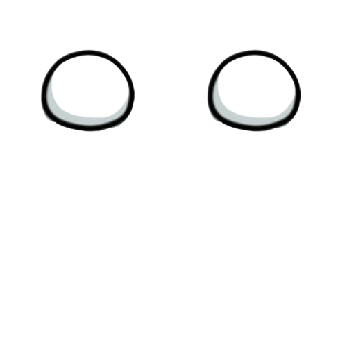

FAQ
よくある質問
NPOナタデココへのよくあるご質問をまとめました。
解決しない場合はお気軽にお問い合わせください。

よくある質問
質問をクリックすると回答が表示されます。
文化交流教室について
NPOナタデココが提供する「文化交流教室」は、外国人メンバーと子供たちの文化交流を軸とした教育プログラムです。子どもたちが外国の文化・言語・食・遊びなどを通じて、体を動かしながら楽しく「世界」を感じることができます。参加にあたって英語力や海外経験は一切不要で、英語が得意な子も苦手な子も楽しめる設計となっております。1時間の単発教室から継続プログラムまで対応しています。
子どもたちの「原体験」を作ることを大切にしており、幼稚園児・保育園児～小学生を主な対象としていますが、中学校、高校まで幅広い年齢に対応可能です。対象年齢に合わせてプログラム内容を調整しますので、事前にご相談ください。
英語力を伸ばすことが可能です。私たちのプログラムは、英語力の向上に重点を置いておらず、外国文化への興味・関心を醸成することを優先しております。他方、教室には外国人メンバーが参加しますので、英語を使用したコミュニケーションを実践いただくことが可能です。また、外国文化への興味・関心が英語学習のモチベーション向上に繋がることは科学的にも確認されており、間接的に英語力向上に貢献するものと考えております。
原則として無料でご案内しております。ぜひお気軽にご参加ください。
インスタグラム又は本HPのイベント情報ページからご確認下さい。
出張教室について
外国人スタッフが直接学校や幼稚園を訪問し、オーダーメイド型「文化交流教室」を実施します。子どもたちが外国の文化・言語・食・遊びなどを体験することのできる特別プログラムです。幼稚園・保育園・小学校・中学校・高校等の教育機関や地方自治体等からご依頼いただいております。
まずはお問い合わせフォームまたはメール（info@natadecoco.org）にてご連絡ください。ご希望の日程・対象学年・人数・テーマ等をお伺いした上で、担当者よりご提案いたします。お問い合わせから実施まで通常4～6週間程度いただいています。
全国対応しております。
費用はプログラム内容・時間・地域・人数によって異なります。NPOナタデココは非営利で活動しており、例えば小規模なイベントであれば数万円から実施可能です。また、公立小学校・幼稚園・自治体が主催する場合は助成制度を活用できるケースもございます。詳細はお問い合わせいただいた後に個別にご案内いたします。まずはお気軽にご相談ください。
現在40か国以上の外国人スタッフが在籍しています。英語圏以外の文化に触れる機会も貴重と考えており、アフリカ、中南米など普段なかなか触れ合わない国のスタッフも多数在籍しています。ご希望の国・テーマを踏まえ、スタッフを選定いたします。
ココサロンについて
ココサロンは、オンラインで国際交流を楽しめるNPOナタデココ独自のサロンです。オンラインワークショップを通じて外国人メンバーと交流し、外国の文化・言葉・生活を学べます。全国どこからでも参加でき、英語力や海外経験は不要です。個人・親子・グループでのご参加が可能です。国籍を超えたファミリーのような関係を目指して運営しています。
月額880円をいただいております。収益については、子供たちの教材購入など、NPOナタデココの非営利活動に充てさせていただいております。
文化交流キットについて
文化交流キットは、先生が自分で授業の中で使える異文化理解の教材セットです。世界の国々に関するクイズ・ビデオレターなどがセットになっており、外国人スタッフがいなくても文化交流の学びを届けることができます。全国の学校・児童館・英語塾等でご活用いただいています。
お試しプラン（無料）とスタンダード版（1,800円）があります。ぜひご自身にあった形をお選びください。
ボランティア参加について
ボランティア参加はボランティア募集ページのエントリーフォームからお申し込みください。学生・社会人を問わず、外国語スキルや海外経験がなくてもご参加いただけます。オンライン説明会・イベント見学を経て活動開始となります。
ボランティア保険、システム利用料として、社会人の方には月額550円の会費をお願いしております（学生無料）。ただし、イベント参加いただいた場合には、謝金・交通費をお支払いしておりますので、収支がマイナスになることはないかと思います。
可能です。
その他
NPOナタデココへのご支援・ご寄付は随時受け付けております。個人・法人どちらからもお受けしています。寄付金は全額、子どもたちへの文化交流プログラムの運営・充実に活用させていただきます。詳細はお問い合わせフォームよりご連絡いただくか、メール（info@natadecoco.org）にてお問い合わせください。
上記FAQ以外のご質問は、トップページ下部のお問い合わせフォームまたはメール（info@natadecoco.org）にてお気軽にご連絡ください。担当者より通常2〜3営業日以内にご返信いたします。
ご不明な点は、お気軽にお問い合わせください。
 お問い合わせはこちら
お問い合わせはこちら